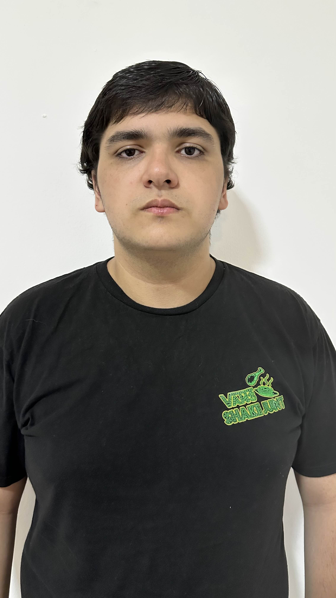

Navegação

Nome: Erick Albert Daré
Curso: Ciência da Computação
Instituição: Universidade Vila Velha (UVV)
Previsão de conclusão: 2029/2
Busco minha primeira oportunidade de estágio ou atuação na área de Tecnologia da Informação, com o objetivo de desenvolver minha experiência prática, ampliar meus conhecimentos técnicos e crescer profissionalmente como futuro desenvolvedor.
Bacharelado em Ciência da Computação
Universidade Vila Velha (UVV)
Cursando – Previsão de conclusão em 2029/2
Principais áreas de estudo até o momento: desenvolvimento web, lógica para computação, fundamentos da computação e modelagem de banco de dados.
Operador de Loja – Lojas Americanas S.A.
Atuação em rotinas de atendimento, organização, suporte às operações da loja e trabalho em equipe.
Essa experiência contribuiu para o desenvolvimento de responsabilidade, disciplina,
organização e convivência profissional em ambiente dinâmico.
Sou um estudante de Ciência da Computação com grande afinidade com tecnologia e forte interesse em construir uma carreira na área de desenvolvimento. Tenho facilidade para aprender, gosto de resolver problemas e estou em busca de novas experiências que me permitam evoluir técnica e profissionalmente.